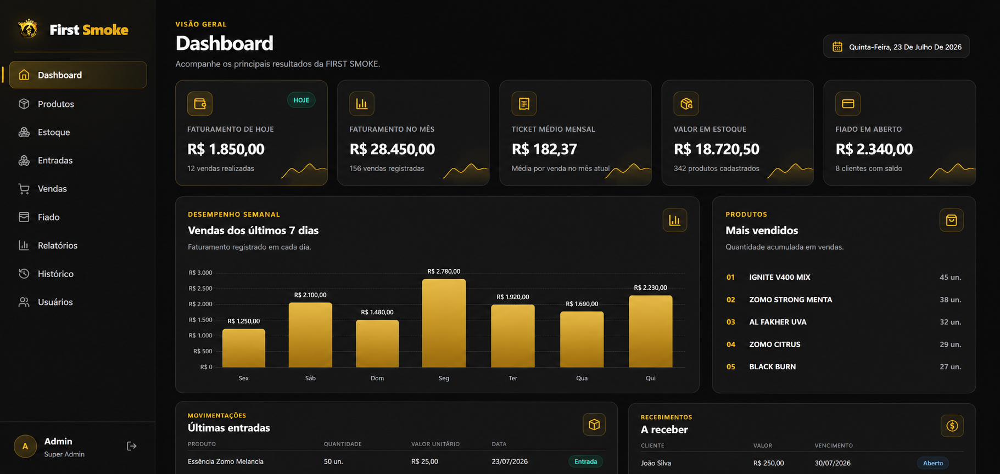
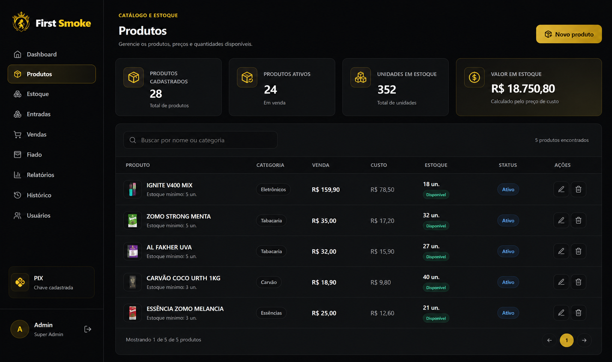
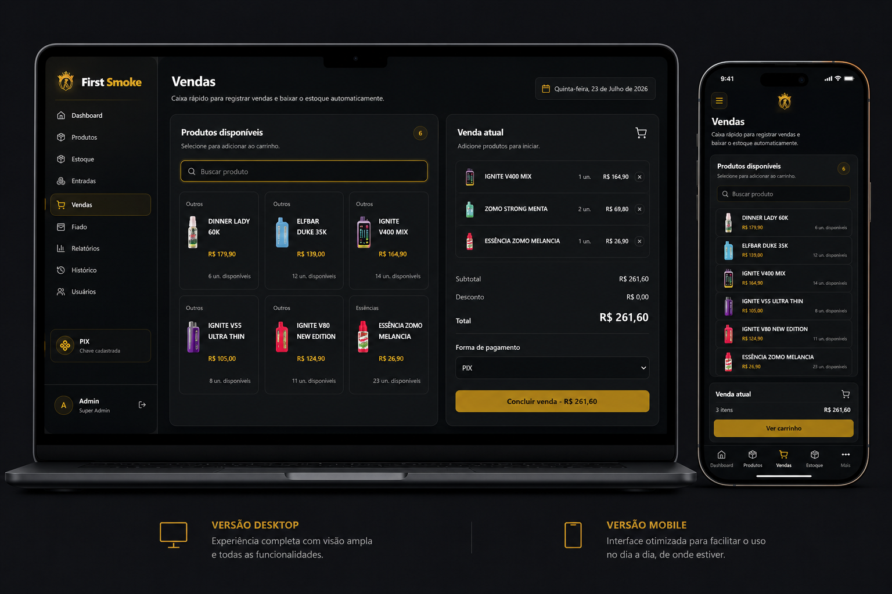
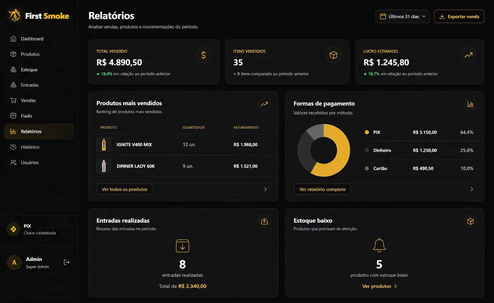
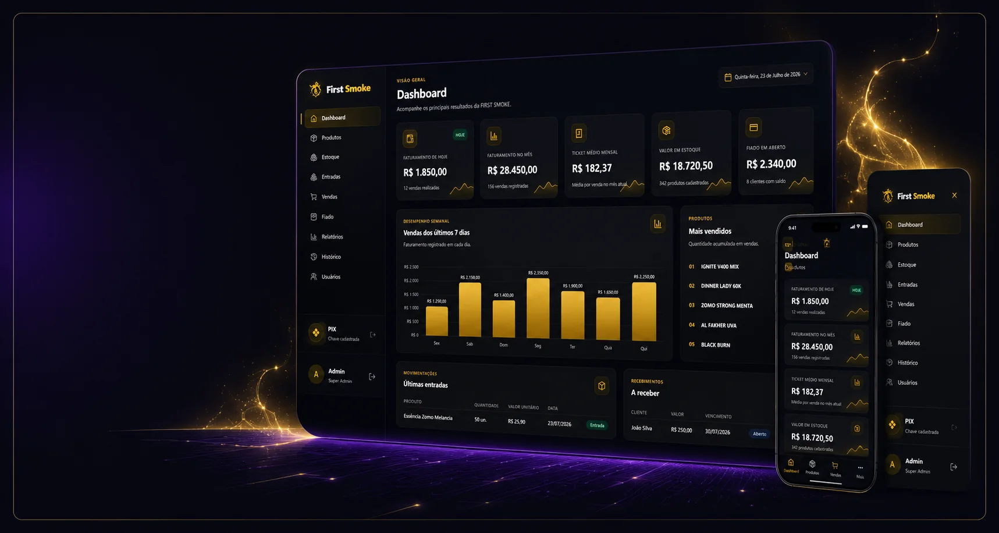

Estoque atualizado
Acompanhe entradas, saídas, disponibilidade e histórico dos produtos.
FIRST SMOKE
Produtos, estoque, vendas, clientes, fiado, relatórios e usuários reunidos em um sistema preparado para a rotina do comércio.

Estoque sob controleIndicadores para decidirUma base de gestão adaptável ao fluxo e às regras de cada comércio.
GESTÃO CENTRALIZADA
O First Smoke organiza as informações que sustentam as vendas e torna a rotina mais clara para gestores e equipe.
Acompanhe entradas, saídas, disponibilidade e histórico dos produtos.
Registre vendas, pagamentos e contas de clientes com segurança.
Defina perfis e mantenha o histórico das ações realizadas no sistema.
VISÃO DO SISTEMA
Telas reais do First Smoke em diferentes áreas da operação.



Cadastros, movimentações e disponibilidade.
Registro rápido e histórico das transações.
Dados, compras e relacionamento centralizados.
Controle de fiado, pagamentos e pendências.
Indicadores operacionais para apoiar decisões.
Acessos protegidos conforme a responsabilidade.
Mapeamos a rotina e as prioridades.
Preparamos produtos, usuários e regras.
Testamos os fluxos com a equipe.
A solução cresce com a operação.

PRÓXIMO PASSO
Solicite uma demonstração e mostre como seu comércio funciona.
Agendar demonstração